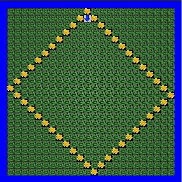
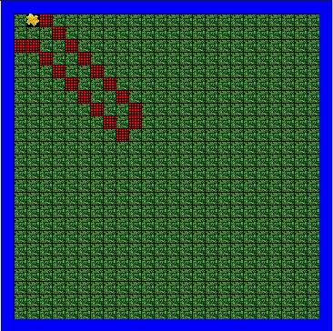
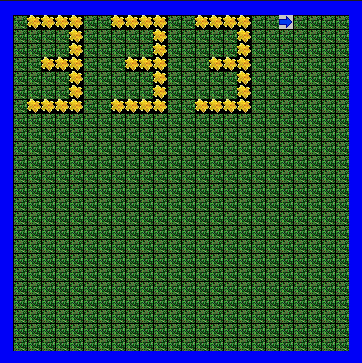
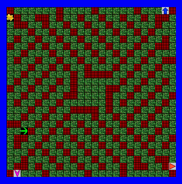
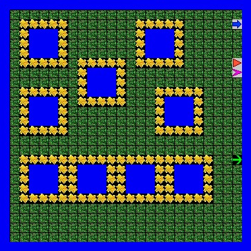
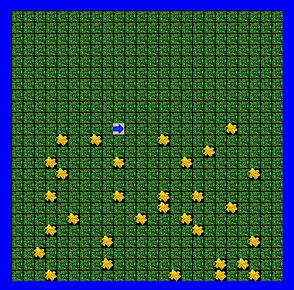
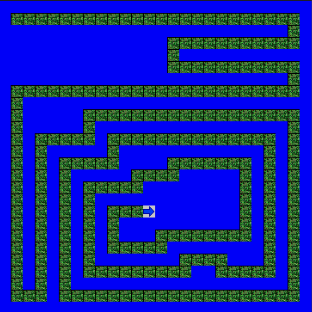
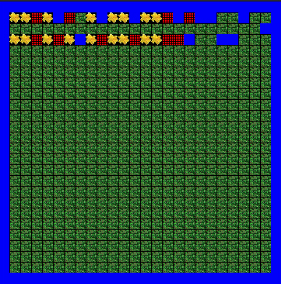

Jeroo Content
Unit 1
In unit 1 we started to learn the basic commands of the program Jeroo and how to do basic tasks like plant a flower and move around the island
Plant a Diamond
In this activity we had to use our Jeroo to go around the area and plant these 'flowers' in a diamond shape. We used code that repeated the same steps so it would create this shape easily. Another tricky task was not to fall in the water that surrounds the island.
Fenced In
In the fenced in activity we had to move our Jeroo down in a stair pattern and at the end of the stairs we had to use a flower that we picked up and throw it at the net so we could escape. 
Unit 2
In unit 2 we started to have to make more complex coding systems where our Jeroo would have to repeat code over and over again but it would change slightly every time. In this unit I mostly copied and pasted.
LED Lab
In this lab we had to use our Jeroo to create a number and once we had the code to make that number all we had to do is go to the top again with the same Jeroo except we would move the Jeroo 2 spaces over to create a gap and then we would copy and paste the same code to create the same number.
Escape Lab
This is one of the more difficult labs because we had to create a complex code that went up and down 'stairs', but the amount of hopping we had to do shortened every time. Luckly the same code worked for every Jeroo so all you had to do is code one of them and then apply it to the other Jeroos.
Unit 3
Unit 3 is where we started having to use if statements so if our Jeroo ran into something then it would run a set of commands. This helped us because we no longer had to copy and paste the same lines of code for everything that we had to do.
Water Lab
In this lab we had to create a repeating, or looping, code that when it detected a water nearby then it would run a set code that would place flowers around the water.
Pinball Journey
In this journey we had to create a program that when through each line of the 'island' and when it ran into a flower it would pick it up. This would clean the enitre island so that it will be clear of flowers
Unit 4
Unit 4 is where it gets really complicated, because we learned how to put if statements inside of other if statements and we also learned that you can call up a method inside a method so that it loops around.
Spiral Maze
This was one of my favorite projects becuase it is a lot of fun to see your complicated code go to work. In this lab you had to create a set of if and while statements to make your jeroo walk through the maze if it hit a water block it would turn the other way thus going through and completing the maze.
Alley Run
In this lab we created a set of if statements that when run goes through and sees what is next to it and then carries out an action. For example if there is a net next to it, it would just move on but if there is a flower next to it, it will go hop around and pick up the flower and then return to the starting space.
